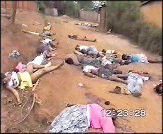

They really need to find a fresher angle: Jewish activists try on an already threadbare trope in a protest against Iranian figurehead Mahmoud Ahmadenijad.
Iranian President Mahmoud Ahmadenijad, we are insistently told by advocates of further military adventurism in the Persian Gulf region, is the most recent version of Hitler Revisited, harboring an implacable desire to annihilate Israel.
The regime in Tehran doesn't occupy an acre of land beyond its borders, and displays no desire to acquire any through aggression or other means. Yet we are told that Iran is a threat to the entire world, and must be contained by Washington through the use of economic impediments and covert operations that are tantamount to an undeclared war.

Thus it may be considered odd that Ahmadenijad has made a point of avowing his government's "friendship" for the Israeli people, despite its irreducible antagonism toward the government ruling that country. Even if one assumes that such statements are fashioned from the purest hypocrisy, they do complicate matters for those who seek to shoehorn the Iranian leader into Hitler's jackboots.
This is not to say, of course, that such people will relent.
Next week, as the monument to human folly called the United Nations opens for business, a coalition of the militant, the mawkish, and the misguided will assemble to demand further action to provoke Iran into a war its government -- unlike that of Germany in the 1930s -- is seeking to avoid.
One key demand of that coalition is that Ahmadenijad be arrested -- that is, kidnapped -- and delivered to The Hague for trial by the UN's International Criminal Court. A petition on behalf of that demand either will be, or has been, delivered to UN Secretary General Ban Ki-moon by David Parsons, a representative of the International Christian Embassy in Jerusalem (ICEJ). An Evangelical organization that acts as a de facto lobby on behalf of the Israeli government, the ICEJ has collected 55,000 signatures from Christians in some 128 countries who earnestly believe that Ahmadenijad should be tried for violating the UN's Genocide Convention.
The logo of ICEJ's Washington Affiliate.

In anticipation of the obvious question -- "When did Ahmadenijad, an admittedly unsavory but thoroughly unremarkable chief executive, attempt to slaughter an entire ethnic group?" -- supporters of the ICEJ's proposal would reply that the Iranian president hasn't committed an act of genocide, but that his public criticisms of Israel are tantamount to inciting such acts. The assumption here is that the UN has the authority to punish genocide pre-emptively by criminalizing public utterances.
This is necessary in the case of Ahmadenijad, according to the ICEJ, in order to prevent a war. Reasonable people would believe attempting to abduct a head of state for arraignment before a foreign tribunal would precipitate a war. Cynics such as myself suspect that this is the entire point -- that the War Lobby in Washington and Israel are eagerly searching for a suitable pretext or provocation to bring about a conflict with Iran, and indicting Ahmadenijad under the UN Genocide Convention might be the right approach.
The chief allegation is that the would-be defendant abetted genocide by allegedly calling for Israel to be "wiped off the map." Wouldn't his recent professions of friendship to the Jewish people mitigate that supposed offense? Apparently not. But for those who inhabit the world of objective fact, the matter is moot, since Ahmadenijad never actually uttered the offending phrase, or used his native tongue to express a sentiment accurately translated as such.
Furthermore, even if he had given voice to such an abhorrent desire, this would not be a crime under any law worthy of respect. Nor does the UN have the legitimate authority -- much less the moral standing -- to prosecute anybody for any authentic crime, let alone a purported violation of a spurious global "law."
When the United States government ratified the Genocide Convention in the late 1980s, there were those of us who predicted that it would be used to re-define that offense -- from the attempted extermination of an entire human sub-population, to the much lesser "act" of saying things that hurt some people's feelings. Ironically, the act that (unconstitutionally) amended U.S. criminal law to permit the enforcement of the UN Genocide Convention was signed by Ronald Reagan, who under the "Ahmadenijad Standard" might well have been hauled away to The Hague for his misbegotten quip, "My fellow Americans, I am pleased to tell you I just signed legislation which outlaws Russia forever. The bombing begins in five minutes."
Ahmadenijad is a nasty little fellow held hostage by some exceptionally pernicious ideas, and he has said some very hostile things about the Israeli government. But as an executive figurehead in Iran's Imam-dominated regime, Ahmadenijad has neither the means to exterminate Israel, nor (as noted above) has he actually indicated any plausible desire to do so. In fact, it's not clear that Ahmadenijad has done anything to injure or harass any Jewish person anywhere in the world, including with Iran's small Jewish community.
Nonetheless, powerful public figures and devoted political activists in several countries are seriously committed to the abduction, indictment, and trial of Ahmadenijad, or they are convincingly pretending to be.
Mr. Parsons of the ICEJ, courier of the group's petititon to the UN, may be as earnest as a child's prayer. But my opinion of his sincerity suffered greatly when I learned how thoroughly Parsons has been trained in the dark arts of "victimidation" -- the tactical use of sanctimonious special pleading to rule some questions impermissible.
Contacted in Israel by telephone, Mr. Parsons took immediate offense to my first question, which, as I explained to him, could be considered obvious and perhaps formulaic: Is this a serious effort, or a species of publicity stunt? He described that question as "demeaning" and said he wouldn't take any more. I asked them anyway.
"We have worked for a year and a half on this campaign," Parsons told Pro Libertate. "This is a serious undertaking that has the full support of many international luminaries, including former UN ambassadors from the United States and Israel -- people like John Bolton, Dore Gold, and Natan Sharansky. These leaders and many others have concluded that it's an open-and-shut case that Ahmadenijad has been inciting genocide against Israel, and that one of the few options we have to avoid a war with Iran is to hold him accountable under international law."
Subtle, this isn't.

Here Parsons was referring to the December 2006 Conference of Presidents of Major Jewish Organizations in New York City. The chief purpose of that gathering was to create a movement intended to pressure the United Nations into indicting and, if possible, prosecuting Ahmadenijad for incitement to genocide.
That meeting produced a seven-point plan to achieve that objective, demanding (among other things) that the State Department add Ahmadenijad to the Terrorist Watch List and that efforts be made to secure the arrest of former Iranian President Akbar Rafsanjani and other officials supposedly implicated in a horrible 1994 terrorist bombing at a Jewish community center in Buenos Aires that killed 86 innocent people. Argentina and Interpol have both identified the Iranian regime and Hezbollah as the perpetrators of that atrocity. But the evidence supporting that conclusion is largely suppositious.
A little more than a year ago, the US House of Representatives, always eager to insert itself into matters beyond its competence and constitutional mandate, endorsed the proposal to put Ahmadenijad on trial before the UN's International Criminal Court (or ICC). The symbolic, non-binding resolution received 411 votes.
Only two members of the House voted against that measure. Not surprisingly, one of them was the body's sole constitutionalist, Texas Representative Ron Paul, who has correctly pointed out that the United States, as an imperial power presently engaged in two wars of aggression and whose rulers are plotting several others, has more pressing matters at hand than auditing the unremarkable utterances of Iran's president in search of supposedly criminal sentiments.

In our conversation, Parsons insisted that precedents set by UN prosecutions of individuals involved in mass murder in Rwanda (and, presumably, the Balkans) would justify the indictment and prosecution of Ahmadenijad on the basis of things he has reportedly said.
He also points out that the current president of Sudan, Omar Hassan an-Bashir, has been indicted by a UN tribunal and may stand trial in absentia for presiding over the slaughter of three tribal groups in Darfur.
Accordingly, Parsons concludes, "There is sufficient precedent and ample cause to begin a legal process against Ahmadenijad, although admittedly it may take a while."
In every tribunal it has convened, the UN has invented its own rules of evidence and due process. The ICC's enabling statute leaves to the court itself the task of legislating global "laws" that would serve as the basis of future prosecutions. In its ad hoc tribunals for Rwanda, the UN permitted multiple-hearsay testimony, "atmosphere" witnesses whose job was, quite literally, to prejudice the court against the defendants, and "expert" witnesses who were permitted to re-interpret innocuous or ambiguous public statements into incitements to genocide.
Global "justice" at work in Tanzania: Elizaphan Ntakirutimana (left) and his son Gerrald in the dock at a UN-created international tribunal for Rwanda.

Elizaphan Ntakirutimana, an elderly Seventh-Day Adventist Pastor who came to the U.S. legally as a refugee from Rwanda, was extradited, tried, and convicted by the UN's Rwanda tribunal on the basis of completely anonymous written testimony.
U.S. Federal Judge Marcel Notzon, who denied the initial extradition request (the Clinton administration eventually found a judge willing to extradite Ntakirutimana), pointed out that only one of the twelve witnesses interviewed by the UN investigator claimed to have seen the pastor "kill or direct the killing of anyone," and that this critical detail did not emerge until the witness’ third interview with authorities.
Apart from that self-impeached witness, nobody else could testify that Ntakirutimana "committed a specific act, killed a friend or loved one, instructed others to kill or injure a friend or loved one, directed the assault, or participated in any way other than the vague reference that he was ‘among the attackers'" -- which could mean that instead of being a perpetrator he was a victim, a negotiator, an antagonist, or even a bystander.
The case against Ntakirutimana, which was expanded to include his son Gerard, would have been dismissed by any properly constituted court in the Western world. Yet both of them were convicted of genocide and crimes against humanity. The father was sentenced to ten years in a foreign prison; the son was given a sentence of twenty-five years. Ntakirutimana was released from prison in 2006 after spending a decade in pre-trial detention or prison; he died shortly thereafter.
The foundational conceit of the ICC and the UN's ad hoc tribunals, and the assumption behind the effort to put Ahmadenijad on trial, is the notion that the UN is in some sense the world's paramount ruling body, with the legitimate authority and moral stature to make and enforce global law.
Most Evangelical Christians --not to put too fine a point on the matter -- vehemently disagree with that assumption, I pointed out to Parsons. In fact, more than a few look on the UN as the Beast in embryo. Does he, or his group, have any misgivings about a proposal that would enhance the power and perceived legitimacy of the world body? "On this issue, we think the UN has a responsibility to act," Parsons replied. "We think the UN was created for this purpose -- that is, it emerged from the flames of the Holocaust with a mission to prevent genocide, aggressive war, and similar atrocities from occurring ever again. And if it can't act to prosecute and punish Ahmadenijad's incitement to genocide, then the UN will reveal itself to be a weak and deformed organization."
That the UN is a "weak and deformed organization," no informed and honest observer will dispute. It has provided spectacles of barbarous hypocrisy on many matters, not the least of which would be genocide -- both in Cambodia and Rwanda. In fact, years before Kofi Annan shared a Nobel Peace Prize with the United Nations Organization, the future Secretary General was a passive accomplice to the Rwandan genocide as head of the world body's "peacekeeping" apparatus.
The UN mission in Rwanda was to administer a peace treaty that called for the disarmament of the civilian population. The country's two chief ethnic groups, the Hutus and Tutsis, had taken turns slaughtering each other for decades or longer.
When Rwanda was a Belgian colony following World War I,* the Tutsis were in favor because their physiogomy -- tall, slender, with smaller and finer features -- made them appear more "European" and therefore, under the regnant racial dogmas of the period, superior to the Hutus. The Belgian colonial authorities recruited Tutsis to administer the government and regiment the Hutus. This had the predictable, if tragic, effect of exacerbating inter-communal conflict that led to a rotating series of bloodbaths between Hutu and Tutsi. (Interestingly, Pastor Ntakirutimana, a Hutu, was married to a Tutsi woman.)
In late 1993, the UN military occupation force (or "peacekeepers," as the world body prefers to call them) obtained advance intelligence of impending massacres of Tutsi civilians in Rwanda. The on-site commander of the UN force, Canadian officer Romeo Dallaire, shared that intelligence with his superiors, a chain of command that terminated with Kofi Annan. Annan's office instructed Dallaire, to pass along that intelligence to the same national government that was plotting genocide.

Dallaire (whom I interviewed at some length several years ago) is a genuinely tragic figure, a decent man working within a thoroughly indecent system. He knew that his orders would lead to horrific mass bloodshed. During the 100-day orgy of murder that began in April 1994, Dallaire was immersed in an incessant Grand Guignol production. He later recalled "standing knee-deep in mutilated bodies, surrounded by the guttural moans of dying people, looking into the eyes of children bleeding to death with their wounds burning in the sun and being invaded by maggots or flies."
After being evacuated and returning to Canada, Dallaire continued to suffer severe psychological after-effects, often being shocked awake in the middle of the night by dreams in which he waded "waist deep in bodies, covered in blood." He was driven to alcoholism and attempted suicide. In 2000, shortly before Kofi Annan received his Nobel Peace Prize, a news reporter found Dallaire cowering under a park bench in Hull, Quebec, a human ruin.
Dallaire was the man who attempted to stop the genocide by disarming the government-organized death squads. Annan was the individual who abetted the genocide by ordering Dallaire not to act on his intelligence, but to share it with the government planning the slaughter -- and to continue to disarm the targeted civilian population.
Between 800,000 and 1.1 million people were annihilated in the 100-day killing frenzy. Most of the victims were dismembered and eviscerated by machete. But the machete-wielding mobs were backed up by government troops carrying automatic weapons.


They trusted the UN: Victims of the Rwandan genocide (left, below right)."They have guns and knives and machetes, the people from the Government party, so we can't fight back," explained Jeanne Niwemutesi, a Tutsi refugee. "We don't have any arms."
In 2000, an Australian attorney named Michael Hourigan conducted an inquiry into the UN's official actions during the genocide. Among his discoveries was the fact that "peacekeepers sent to protect [potential victims] ... either handed them over to the rampaging militants or ran way when fighting broke out." That is the precise nature of the allegation against Ntakirutimana. In the case of the UN military, however, the evidence was solid as granite.
Hourigan attempted to file a class-action suit against the UN. The body replied by asserting a claim of plenary immunity. "What does it tell us about the UN that not a single official thought fit to resign over the first indisputable genocide since the UN Charter was signed?" asked human rights activist Alex de Waal in despair over this spectacle.

What it tells us is that the UN is not a noble idea that was imperfectly realized. Instead, it is an abhorrent idea -- "human security" through concentration of power in a global body -- that has had predictably tragic consequences. Assuming that Mr. Parsons and his colleagues at the ICEJ are motivated by sincere concern for the well-being of Israel, it is clear that they are under the influence of a very powerful delusion.
Since its creation, the UN done more than any other human institution to facilitate war and genocide. Were it to act on the demand that Ahmadenijad be apprehended and prosecuted for something he never said, the UN would add to its unenviable record by precipitating an utterly avoidable war with Iran that would be a disaster for everyone in the region, including Israel.
_____
*I erred in the original version by stating that Rwanda became a Belgian colony in the late 19th century. My thanks to reader Peter Lawrence for this very important correction.
 On sale now!
On sale now!Dum spiro, pugno!
15 comments:
Those of you who read the Bible might note the similarities between the UN and the "image of the beast" mentioned in Revelation.
If they really want to prevent the genocide of innocent people as they claim, they would've intervened in South Africa a long time ago when the Afrikaners gave evidence of an ongoing silent mass-murder and land-theft being committed against them as I type this.
The beast is the real power in the world - the military-industrial complex - not the UN.
Allow me to offer my usual courtesy trackback.
Will I hate to push you to write even more, but the outrages are coming so fast now.....
This one is from the Army's own website, but just read it and see if you don't get the same chill down your spine that I did.
http://www.armytimes.com/news/2008/09/army_homeland_090708w/
Some people from the church I attend went to Iran on a mission trip, and stayed with Iranian Christians while there for several weeks. Uneventful if memory serves. No torture, summary execution, or imprisonment. Guess it's not as hellish as the neocons say it is.
"The body replied by asserting a claim of plenary immunity". Isn't this always the claim of tyrants large and small? You see it all the way down the chain right to your own local level if one cares to look.
Maybe a good addition to a true constitution, one adhered to rather than being ignored, would be to forbid any gov't body or functionary in any official action or capacity from official immunity.
Then again, we'd have to have a functioning gov't rather than the macabre, language twisting leviathan we suffer under.
The only good bureaucrat is one who is stretching a rope . . .
Sic Semper Tyrannis
So now our Army will be dealing with civil unrest. This is very bad.
will,
mr parsons will soon find that as he empowers the UN against iran, he will empower it against israel. i wonder why these people don't think about the 3rd order effects of their actions.
maybe not his kids, but his posterity may find themselves hunted down by those in blue helmets using a doctrine that he helped create.
rick
In polite terms, the U.N. is irreparably flawed. And, those seeking to use the I.C.C. and U.N. (in this case, as a justification for abducting Ahmadinejad) cannot be described in ‘polite’ terms.
However, I was troubled by your characterization of President Ahmadinejad as ‘unsavory’ and ‘unremarkable’. You also referred to him as a ‘nasty little fellow’ and an Iranian figurehead. Clearly, you do not hold Mr. Ahmadinejad in high regard, and I am curious about the underlying reasons. What caused you to have such a low opinion of him?
We are subjected to a constant stream of propaganda and I was surprised at just how effective and subtle the manipulation is when I discovered that my own opinion was actually the result of such disinformation, and flatly wrong. My formative years occurred during the Reagan era, so all things ‘Iran’ bore a derogatory connotation in my mind. By virtue of being Iranian, Ahmadinejad inherited that stereotype. At first, I didn’t think much of him, but when the facts on the ground conflicted with my preconceived notions I was forced to alter my position.
President Ahmadinejad’s conduct in the face of the ridiculous allegations and manufactured circumstances has been flawless. He has always been composed and dignified as he laid out actual rationale supporting his positions, the same positions which he has forcefully and correctly asserted from the beginning. He has been honest and direct in confronting the malicious despicable lies spewed (ad nauseum) by our own government and that segment of society that controls it.
As a long-time political observer, I would describe Ahmadinejad’s statesmanship as superlative. I say this because he has managed crisis after fabricated crisis in such a way as to preserve his nations rights under the Non Proliferation Treaty, without being drawn into military conflict or compromising on the truth. The clencher was his bold appearance at Columbia University, followed by several childishly hostile media interviews. The government, Columbia University, and those propagandists posing as professors and journalists united to provide a uniformly disgraceful page in American diplomatic hospitality. Ahmadinejad handled it so well that the ziofascist spin machine was widely revealed for what it is, manipulative propaganda. In the end, their tactics were drug into the light and displayed prominently. Something they truly hate.
As an American, subjected to decades of Bush/Clinton criminal antics, I may have a skewed frame of reference for evaluating heads of state but I think he’s pretty damn good. Ahmadinejad has demonstrated poise, intellect and honesty without a trace of hubris (the hallmark of the Bush administrations).
I like Ahmadinejad and I appreciate him for all the same reasons that I appreciate your blog and the opinions you express in it. I guess I was surprised by your opinion of him, and it left me wondering what I don’t know.
Thanks
My view of Ahmadenijad is comparable to the opinion I have of nearly all politicians, presidents in particular.
I have to admit that you're right in describing Ahmadenijad's statesmanship as very impressive, even spectacular. It is to his considerable credit that he has managed to keep his country out of the war Washington lusts for. To that extent he has my respect.
Domestically, he's been a disaster for the Iranian economy (I have friends -- colleagues from my martial arts days -- whose families still live there), and he's done nothing to rein in, let alone dismantle, a pretty vicious police state.
That being said, this should be as well: All of Washington's Arab/Muslim allies in the region are worse than Iran.
I found a funny agitprop poster it shows uncle sam pointing a finger and it says "I'm Israels whore and so are you." I laughed out loud.
There is a person who blogs (from German, perhaps?) whose name/s are Bjorn and Farmer. I have been reading at his site and he is tracking the merging of governments. He is tracking a Spaniard named Javier Solana who is shockingly powerful yet we never hear his name mentioned. It seems that everything that happens around us, including the powerful indoctrination that everyone from toddlers on up are getting, is all with the purpose of enabling the Power Elite to consolidate and control. Nobody can escape the brainwash and the power grab at this time. Driving through my town I see decorative banners mounted along the street that praise "volunteerism" because that is part of the Plan to enslave us all. In this week's mail I received a letter from local govt. telling me I would receive from them a very large blue trash can to use for my recyclables (I don't recycle) and that the can belongs to them, has a serial number on it, is to be returned to them if I move away, and I am to use it for putting out my cardboard, glass and plastic. I was not asked if I wanted it but it is going to be forced on me and I will be obligated to keep it on my property. None of my neighbors will find this odd. They will comply. In a very short time the majority of people have become dumb animals. They gladly give control to others over their lives. There will be no objection to World Government.
Read about the goings-on of the UN's Alliance of Civilizations, the AoC. It appears to be a big part of The Beast.
Judicial
“…it would be a mistake to imagine that the regular courts continued more or less unaltered by the advent of the Nazi dictatorship. They did not.” Pg. 70
“The central goal of a human security strategy has to be the establishment of legitimate political authority capable of upholding human security…At an operational level, the primary task of any deployment is to assist law enforcement. This means that a much larger investment will have to be made in civilian capabilities for law-enforcement, i.e. police, court officials, prosecutors and judges… Military troops will be an important component of these operational capacities, but they will have to restructure and reequip along new lines and they will need to be integrated with civilian capabilities, such as police, tax and customs officers, judges, administrators, providers of aid and human rights specialists. The ultimate aim is to be able to deploy different packages of military-civilian capabilities according to the situation.” - A Human Security Doctrine for Europe
“A new law, passed on 10 February, took the Gestapo out of the jurisdiction of the courts, so that there could henceforth be no appeal to any outside body against its actions.” Pg. 55
“Perhaps the most important challenge is the considerable cultural shift both for the military and civilians. The new type of human security office…will have to develop a common ethos, which will require…putting individual human beings, whoever they might be, above nation or homeland…the legal framework could build on the domestic law of the host state, the domestic law of the member states and the rules of engagement, international criminal law, human rights law, and international humanitarian law…a human rights oriented, bottom-up approach would require that the rules of engagement are public, and are translated into local languages, so that the local population is aware of them.” - A Human Security Doctrine for Europe
“Goebbel’s propaganda machine could not persuade people that all their most dearly held values and beliefs had to be abandoned in the brave new world of Hitler’s Third Reich” pg 214
For some fun UN reading look up agenda 21, codex alimentarius these are not pizza delivery and make sure the plumbing is working plans at all.
I was chatting with my tech guru and asked how come we never hear about genocide in Rwanda, Cambodia, ethnic cleansing of Serbs and all the other genocides throughout history. He said "Well, those people don't have public relations firms,control of the media or the money to hire them." The only politically correct horror against humanity is the Third Reich which was so vast because mass murder was official state policy. Let's not forget that gypsies, communists, anarchists, dissenters, resistance fighters, homosexuals, so called degenerate artists and writers, allied commandos and spies and socialists also died at the hand of the nazis.
Have you seen the new police-uniforms popping up all over USA? They are clones of the Nazis uniforms in ww2.Have you thpught of what the 700 KZ-camps -all over USA are meant for? Have you wondered what the millions of special caskets allready in place are for?5M jews died - and 50 M other peoble. What is anti-semitism? what is one anti , if anti-semite? Is it one of the tribes;Sem,Kam and Jafet? Personally I am anti sem,Kam and Jafet. The jews I´m not against, they are victims again , of the same criminals; the Rotschilds.Have you thought about when they come , through the population of artists ,homos,old,redheads,invalids,mongols, etc.etc they come to YOU???
Post a Comment